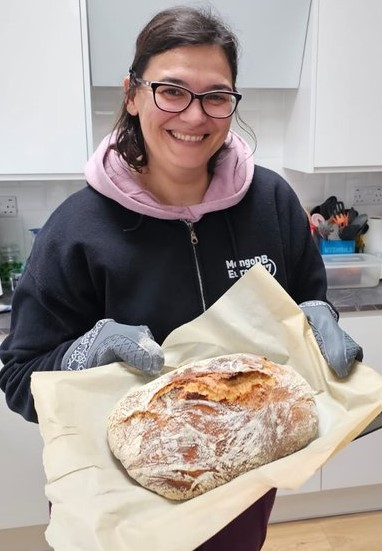
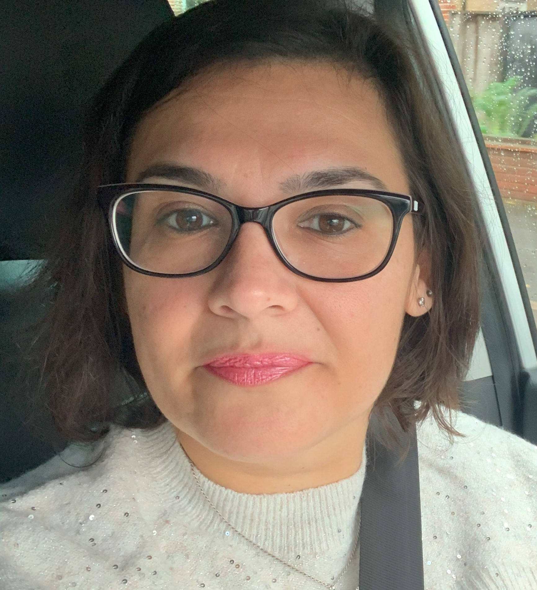
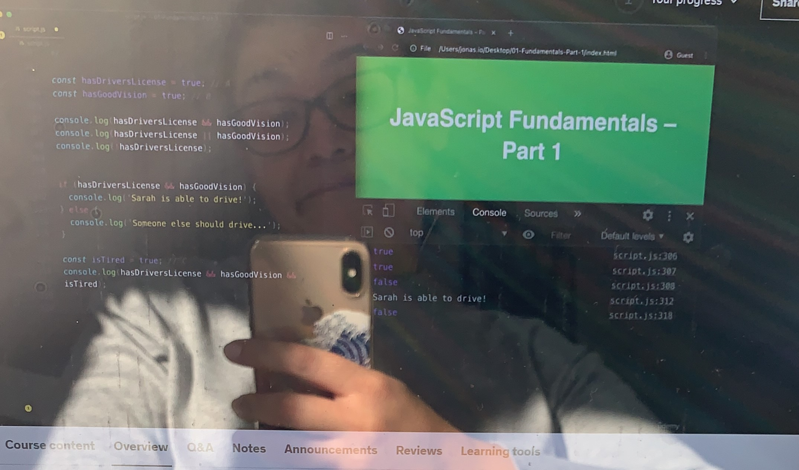

Hi! I'm Elena, I'm Italian and I've been living in London for 10 years :) I am married and I have 2
amazing-cheeky children! I love cooking and baking
(yep, that bread was made from scratch and it was really yummy - at least my friends said so! - :) )
A while ago I started my self-thought journey in programming and I found out I actually really like
coding! I know there's a whole world to discover, and I keep going, learning and testing my knowledge by
playing on Codewars, Exercism, and other useful webpages where I
can learn different things every time. I started studying the basics HTML and CSS, then Javascript, and at
the same time I've started some free online courses on Codecademy and I completed the Ruby basic course, and
almost completed now the free Python course (that I really really like!)
I hope I will be able to start working in IT soon, as I'd really love to be part of a team where I can
put my learning into real practice and share thoughts and ideas about tech, and obviously keep
learning, coding, studying!!
A few months ago I found
this Founders and Coders website and I started exploring their page..Then I've decided to challenge myself
and try to put what I've learnt so far into practice..and here I am, trying to build my web-page/ portfolio,
just hoping to be able to be part of a teamwork, and start an apprenticeship soon,eventually!
I know
that this is just the beginning, and that my page needs big changes, but I'm here because I want to learn,
even from my mistakes!
In the meantime.. thank you so much for visiting my page!
|  |  |  |